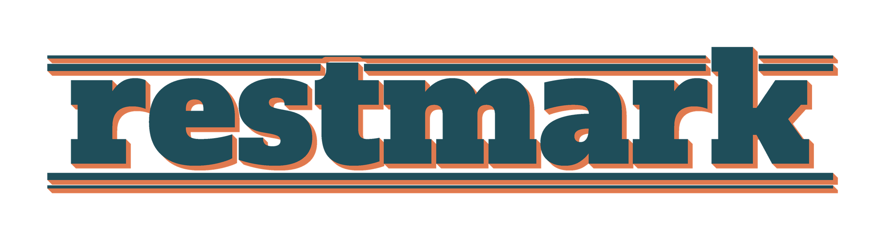

Privacy Policy
Effective date: October 13, 2026 · Applies to the Restmark app for iPhone (version 2.0 and later), its widgets, and this website.
- Restmark reads sleep, heart rate variability (HRV) and resting heart rate from Apple Health. It never writes to Apple Health.
- Everything is processed and stored on your iPhone. Restmark has no servers and sends your data nowhere.
- No accounts, no analytics, no advertising, no tracking and no third-party SDKs.
- Your health data is never sold, shared with third parties, or used for advertising or marketing.
Who we are
Restmark is developed and published by Orchard Games (“we”, “us”). If you have a question about this policy, contact us at altezlansing@gmail.com.
Information Restmark reads from Apple Health
With your permission, Restmark reads the following HealthKit data types. Access is read-only: Restmark does not ask for permission to write, and never adds, changes or deletes anything in Apple Health.
| Health data | Why Restmark reads it |
|---|---|
| Sleep (Sleep Analysis: in bed, asleep, awake and sleep stages, with the name of the device or app that recorded it) | To measure when and how long you sleep, learn your personal sleep need, calculate sleep debt, plan bedtimes, score consistency, estimate your energy curve, and draw your charts. |
| Heart rate variability (HRV, SDNN) | To compare your HRV during sleep with your own 30-day baseline for the Readiness score. |
| Resting heart rate | To compare your resting heart rate with your own 30-day average for the Readiness score. |
Restmark reads up to roughly the last 120 days of this data so its estimates can start from your history. You choose which types to allow on the Apple Health permission screen, and you can change this at any time in the iPhone Settings app under Health › Data Access & Devices › Restmark. If you turn access off, Restmark simply shows less.
How Restmark uses Health data
- On-device only. All calculations happen on your iPhone. Restmark does not contain any code that uploads data, and it has no servers, cloud database or backend of any kind.
- Only for Restmark’s features. Health data is used solely to provide the sleep features you see in the app and its widgets.
- No advertising, marketing or data mining. Health data is never used for advertising, marketing, use-based data mining, or any purpose other than providing Restmark’s features to you.
- Never sold or shared. We do not sell, rent, share or disclose Health data (or any other data) to third parties, including advertising platforms, data brokers and information resellers. We never receive your data in the first place.
- Not stored in iCloud by Restmark. Restmark does not use iCloud or any other online storage for your Health data.
What is stored on your iPhone
To work quickly and offline, Restmark keeps the following inside its private app storage on your device:
- a cached copy of the Health samples it read (sleep, HRV, resting heart rate) and the results it calculated;
- things you enter: settings, regular days off, a custom sleep need, planned wake times, night adjustments and exclusions, tags and notes;
- a small summary (for example sleep debt, its trend, tonight’s Ideal Bedtime and your Consistency score) in a shared container on the same iPhone so Restmark’s Home Screen and Lock Screen widgets can display it. The widgets never read Apple Health themselves.
Nothing you add in Restmark (adjustments, exclusions, tags, notes) is written back to Apple Health. If you back up your iPhone with iCloud Backup or a computer, iOS may include Restmark’s app data in that backup, as it does for other apps; that backup is controlled by you and Apple.
Notifications
If you allow notifications, Restmark schedules local notifications on your iPhone (Morning Summary, Wind-Down Reminder before your Ideal Bedtime, and a Sunday Weekly Recap). Their content is created on your device. Restmark does not use push notifications or any notification server. You can turn each notification off in Restmark’s Settings, or turn off all notifications for Restmark in the iPhone Settings app. Notification text may include sleep figures and can appear on your Lock Screen depending on your iPhone’s notification settings.
No accounts, analytics, ads or tracking
- There is nothing to sign up for or sign in to.
- Restmark contains no analytics, crash-reporting, advertising or attribution SDKs, and no third-party code that collects data.
- Restmark does not track you across apps or websites and does not use the advertising identifier.
Because no data leaves your device, we (the developer) do not collect, see or hold any personal data about you. On its App Store page Restmark is labelled Data Not Collected.
Diagnostics you choose to share
Restmark has an optional Diagnostics screen for troubleshooting. Its “Copy report” button puts a text report on your iPhone’s clipboard only when you tap it. Restmark does not send it anywhere. If you choose to paste it into an email to us, we use it only to answer your request and delete it when we no longer need it.
Contacting support
If you email us, we receive the information you choose to include (such as your email address and message). We use it only to reply to you, and we do not combine it with any app data, because we have none.
This website
This policy and the support page are static pages hosted on GitHub Pages. They use no cookies, analytics or tracking scripts. GitHub, as the hosting provider, may process technical information such as your IP address to deliver the pages and keep them secure; see GitHub’s privacy statement. Opening “Open Full Policy” in the app simply opens this page in your browser.
Children
Restmark is a general wellness app intended for adults and is not directed to children under 13 (or the equivalent minimum age in your country). Restmark does not collect personal information from anyone, including children.
Your choices and rights
- Health access: change or revoke it any time in Settings › Health › Data Access & Devices › Restmark.
- Corrections: exclude or adjust nights inside Restmark (Settings › Sleep Data › Data Corrections, or a night’s detail screen).
- Deletion: deleting Restmark from your iPhone removes all of its stored data and widgets. Your original data in Apple Health is not affected.
- Depending on where you live (for example under the GDPR or US state privacy laws) you may have rights to access, correct or delete personal data. Since we hold no personal data from the app, there is nothing for us to access or delete; all app data stays under your control on your device. You can still contact us with any request.
Not medical advice
Restmark is for general wellness and self-insight. It is not a medical device and does not diagnose, treat, cure or prevent any disease or condition. Scores and estimates (such as Readiness, Consistency, sleep need and Energy) are approximations. Talk to a qualified health professional about any sleep or health concern.
Changes to this policy
If we change how Restmark handles data, we will update this page and its effective date before the change takes effect, and describe material changes in the app’s release notes. We will not start collecting or sharing data without updating this policy and, where required, asking for your consent.
Contact
Orchard Games · altezlansing@gmail.com